Arquitectura de Computadoras
Ingeniería en Sistemas Computacionales · TecNM Saltillo

Ingeniería en Sistemas Computacionales · TecNM Saltillo
Propuesto por John Von Neumann en la década de 1940, sirvió de base para la computadora EDVAC y para el diseño de los ordenadores actuales. Se fundamenta en una CPU que accede a una memoria compartida donde se almacenan tanto datos como instrucciones, recuperados a través de un bus común.

Similar a Von Neumann pero con memorias físicamente separadas para instrucciones y datos. La CPU accede a ambas simultáneamente, mejorando el rendimiento en procesamiento de señales y tareas de acceso paralelo intensivo.
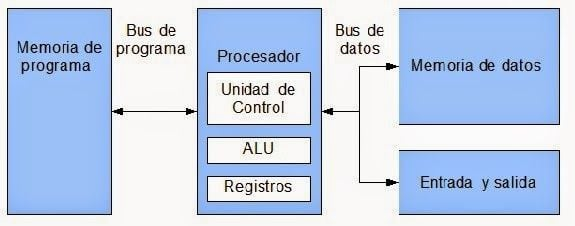
Busca mejorar el desempeño procesando en paralelo varias etapas del ciclo de instrucción. El procesador se divide en unidades funcionales independientes que comparten el procesamiento de instrucciones en cascada.
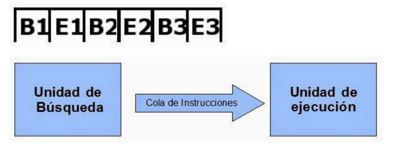
Cuando el pipeline alcanza su límite teórico (una instrucción por ciclo de reloj), se recurre a múltiples procesadores para incrementar el desempeño. La Clasificación de Flynn organiza estos esquemas:
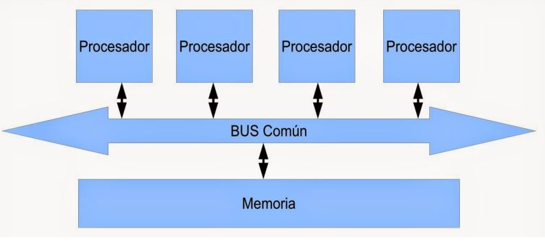
Utiliza un conjunto reducido y altamente optimizado de instrucciones. Los procesadores RISC ejecutan instrucciones en un solo ciclo de reloj, siendo eficientes en operaciones simples y repetitivas. Son ampliamente usados en servidores y dispositivos móviles.
Emplea un conjunto de instrucciones más amplio y diverso que puede ejecutar tareas complejas en un ciclo de reloj, facilitando la programación aunque con posibles implicaciones en el rendimiento.

La CPU es el administrador del sistema donde la entrada de datos se transforma en salida. Regula simultáneamente todas las funciones internas de la computadora.
Realiza operaciones aritméticas (suma, resta) y lógicas (AND, OR, comparaciones). Contiene circuitos aritméticos, lógicos (puertas AND, OR, XOR) y de control del flujo de instrucciones.
.JPG)
Coordina y gestiona la ejecución de instrucciones: interpreta y decodifica las instrucciones de memoria, regula el flujo de datos entre las partes de la CPU y asegura el correcto funcionamiento del procesador.
Vías físicas que interconectan CPU, memoria y periféricos, clasificadas según función:
Actúa como memoria a corto plazo de la computadora, almacenando temporalmente datos y programas que la CPU necesita de forma inmediata. Es un búfer ultrarrápido entre el almacenamiento a largo plazo y el procesador.
Tipo de almacenamiento no volátil que retiene información permanentemente, incluso sin energía. Almacena el firmware, instrucciones de arranque (BIOS/UEFI) y el funcionamiento básico del hardware.

Almacenamiento temporal de alta velocidad, ubicado entre la CPU y la RAM, que guarda datos e instrucciones frecuentes para acelerar el rendimiento. El procesador accede a caché antes que a la RAM, mucho más lenta.


Son la interfaz entre la CPU y los periféricos. Gestionan diferencias de velocidad, formatos de datos y voltajes entre procesador y hardware externo.


El controlador DMA transfiere datos directamente entre la memoria principal y el dispositivo de E/S sin usar la CPU como intermediario. La CPU solo interviene al inicio y al final de la transferencia, aliviando la congestión del bus.

Canal electrónico por el que se transfieren datos entre componentes de la computadora. Los tipos principales son:
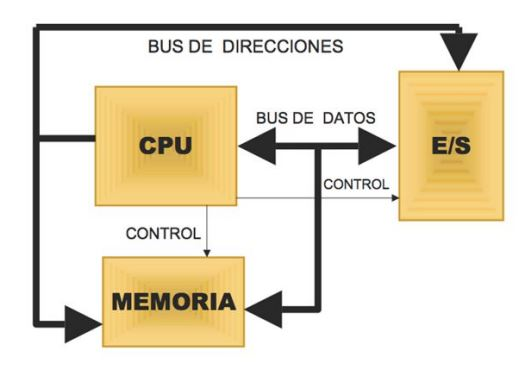

Mecanismo que altera el orden lógico de ejecución como respuesta a un evento externo generado por el hardware de E/S de forma asincrónica.
La CPU procesa instrucciones y coordina todas las operaciones del sistema. Para optimizar el rendimiento implementa la Segmentación (Pipelining), procesando simultáneamente diferentes etapas de varias instrucciones en cascada.
Los registros son celdas de almacenamiento de velocidad extrema integradas dentro del procesador, divididas en dos categorías:
Manipulados directamente por los programadores en ensamblador:
Uso exclusivo de la Unidad de Control:
Procesamiento síncrono elemental de la CPU:
El PC envía la dirección a memoria; la instrucción se aloja en el CIR y el PC se incrementa para apuntar a la siguiente.
La UC interpreta el código de operación (opcode), identifica los operandos y prepara las rutas de datos internas.
La ALU realiza la operación y los resultados se guardan en registros internos o se escriben de vuelta a la RAM.
Metodologías lógicas para localizar datos en memoria. Un error de direccionamiento puede provocar fallos graves de seguridad.
| Modo | Mecanismo | Ejemplo |
|---|---|---|
| Inmediato | El dato está incluido dentro de la misma instrucción. | MOV AX, 0ABCDH |
| Directo (Absoluto) | La instrucción contiene la dirección de memoria exacta del dato. | MOV BX, [1234H] |
| Por Registro | El operando reside dentro de un registro interno del procesador. | MOV AX, CX |
| Indirecto | Apunta a un registro que contiene la dirección RAM real (base de punteros). | MOV AX, [BX] |
| Indexado | Combina base, índice y desplazamiento constante. | MOV AX, [BX+SI+8] |
Una aplicación en C usó strcpy sin validar límites. Un atacante inyectó una cadena que sobrescribió la pila y modificó el PC, infectando más de 350,000 servidores en 14 horas.
Los periféricos embebidos (GPIO, UART) de vehículos se controlan mapeándolos en memoria mediante direccionamiento indexado, permitiendo control de hardware crítico sin demoras.
Con el avance tecnológico, las funciones del Northbridge se integraron en la CPU. El chipset se simplificó al PCH, encargado de periféricos, almacenamiento NVMe secundario, conectividad inalámbrica y carriles de expansión adicionales.
El chipset define las capacidades estructurales de la computadora: determina el procesador compatible, la cantidad y frecuencia máxima de RAM, las velocidades de transferencia y las tecnologías de expansión disponibles.
La CPU interpreta y ejecuta instrucciones de los programas. Opera bajo el Ciclo Fetch – Decode – Execute, repetido miles de millones de veces por segundo.
.JPG) Figura 3.1: Ciclo Fetch – Decode – Execute – Store de la CPU.
Figura 3.1: Ciclo Fetch – Decode – Execute – Store de la CPU.
El bus es la autopista física de comunicación entre CPU, memoria y periféricos. El arbitraje del bus organiza el uso para evitar colisiones:
El arbitraje puede ser Centralizado (chipset decide) o Distribuido (los periféricos se turnan por lógica interna).


 Figura 3.3: Interfaz de red integrada Ethernet RJ-45.
Figura 3.3: Interfaz de red integrada Ethernet RJ-45.

.JPG)
Permite a periféricos de alta velocidad (SSD, NIC) transferir datos directamente hacia/desde RAM sin intervención continua de la CPU. Al finalizar, el DMA envía una interrupción al procesador.
 Figura 3.5: Interconexión y bypass del CPU mediante el controlador DMA.
Figura 3.5: Interconexión y bypass del CPU mediante el controlador DMA.
Modos: Burst Mode (ráfaga continua), Cycle Stealing (robo de ciclos) y Transparent Mode (aprovecha vacíos del procesador).
Basados en osciladores que cuentan pulsos del reloj para medir tiempo con alta precisión, generar interrupciones periódicas para cambio de tareas del SO y controlar eventos en intervalos exactos (sucesores del Intel 8253/8254).
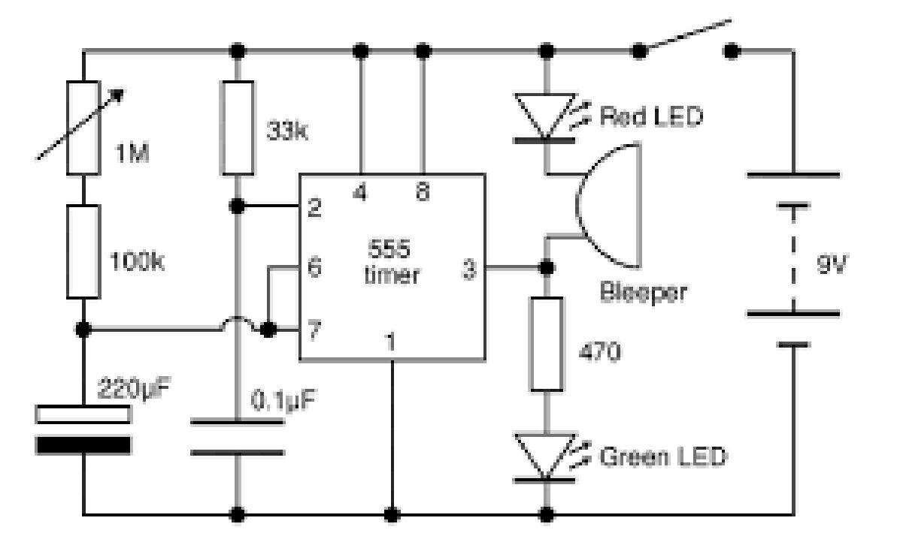
Figura 3.6: Bloque funcional de un temporizador de intervalos programable.Estructuras lógicas del chipset que decodifican comandos, generan señales eléctricas operativas (lectura/escritura en memoria) y mantienen la sincronización entre subsistemas integrados.
El flujo operativo del hardware se divide según el entorno: Ofimática (dispositivos estándar), Multimedia (alta transferencia) o Videojuegos (baja latencia y máxima tasa de refresco).
 Figura 3.7: Flujo de datos desde periféricos de entrada al núcleo de procesamiento.
Figura 3.7: Flujo de datos desde periféricos de entrada al núcleo de procesamiento.
Transforman CA de la red en CD regulada (+12V, +5V, +3.3V) para los componentes internos.
 Figura 3.8: Distribución de cableado ATX y conversión de potencia.
Figura 3.8: Distribución de cableado ATX y conversión de potencia.
Define los ecosistemas operativos donde funciona la computadora. La selección de arquitectura debe responder a las exigencias térmicas, de seguridad y durabilidad del entorno.
Hardware orientado a tolerancia de fallos y resistencia extrema para líneas de manufactura 24/7. Prioriza refrigeración pasiva y procesadores con memorias ECC para corrección de errores.
Infraestructura de alta disponibilidad, velocidad transaccional y protección criptográfica. Requiere módulos TPM 2.0 y virtualización activa para mitigar vulnerabilidades en transacciones financieras.
 Figura 4.1: Modelo de Von Neumann con bus unificado.
Figura 4.1: Modelo de Von Neumann con bus unificado.
 Figura 4.2: Matriz SISD / SIMD / MISD / MIMD.
Figura 4.2: Matriz SISD / SIMD / MISD / MIMD.
Todos los núcleos acceden a un espacio de memoria global unificado.
 Figura 4.3: Arquitectura de Memoria Compartida.
Figura 4.3: Arquitectura de Memoria Compartida.
 Figura 4.4: Acceso Uniforme (UMA) vs No Uniforme (NUMA).
Figura 4.4: Acceso Uniforme (UMA) vs No Uniforme (NUMA).
Cada procesador posee su propia memoria privada e independiente. La comunicación entre nodos se realiza mediante Paso de Mensajes (Message Passing).
 Figura 4.5: Arquitectura de memoria distribuida con nodos independientes.
Figura 4.5: Arquitectura de memoria distribuida con nodos independientes.
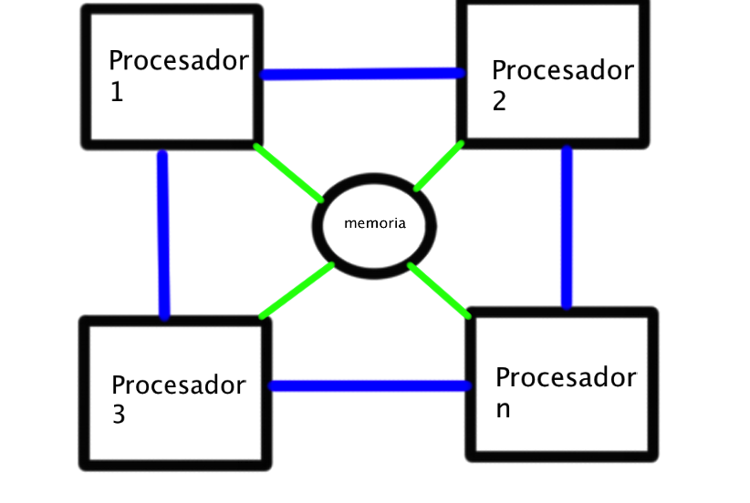
Sistemas Multiprocesador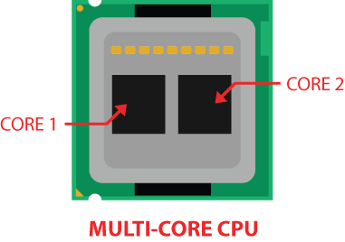
Multi-núcleo (Multi-core)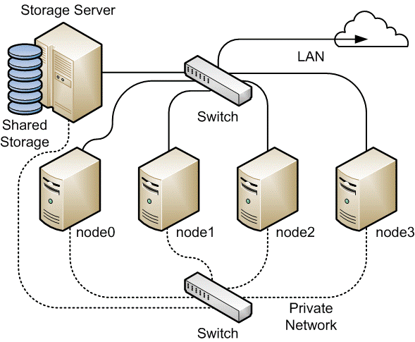
Sistemas Distribuidos (Clústeres)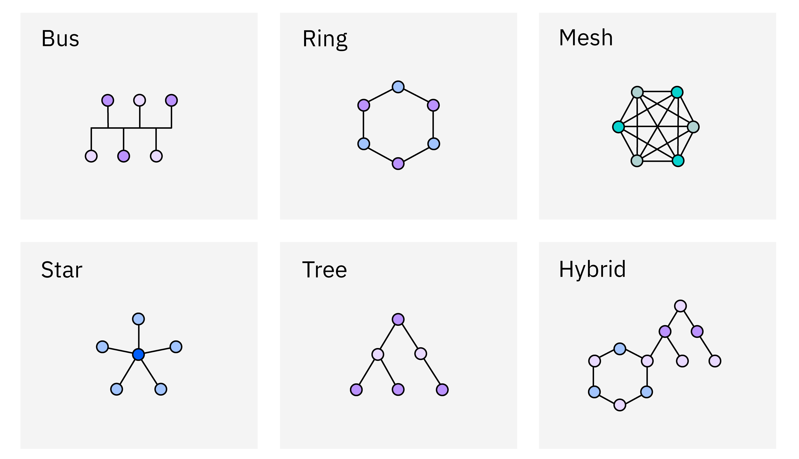
Figura 4.6: Topologías fijas comerciales. Bus Compartido Dinámico
Bus Compartido Dinámico
 Matriz Crossbar Switch
Matriz Crossbar Switch
 Redes Multietapa (MIN)
Redes Multietapa (MIN)
Intel implementa Ring Bus en procesadores de escritorio y Mesh Architecture en servidores Xeon para escalado eficiente de núcleos.
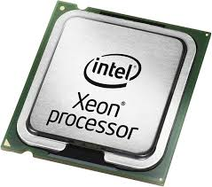
AMD diseña bloques independientes de silicio llamados Chiplets, comunicados mediante la red propietaria Infinity Fabric de ultra alta velocidad.
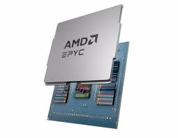
Las GPUs NVIDIA incorporan miles de núcleos pequeños para paralelismo masivo de datos: renderizado gráfico avanzado, cálculos matriciales e Inteligencia Artificial.
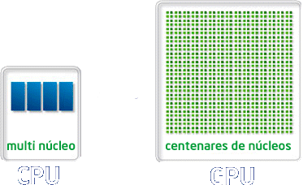
Identificación física de componentes internos de un equipo de escritorio antiguo.
Estudio técnico comparativo de microarquitecturas, litografías, frecuencias y sockets de 5 procesadores Intel.
Inspección de módulos físicos de 16 GB DDR4 (Samsung y SK Hynix) y validación lógica en sistema.
Desmontaje y reensamble de equipo OEM HP con verificación del ciclo de encendido POST.